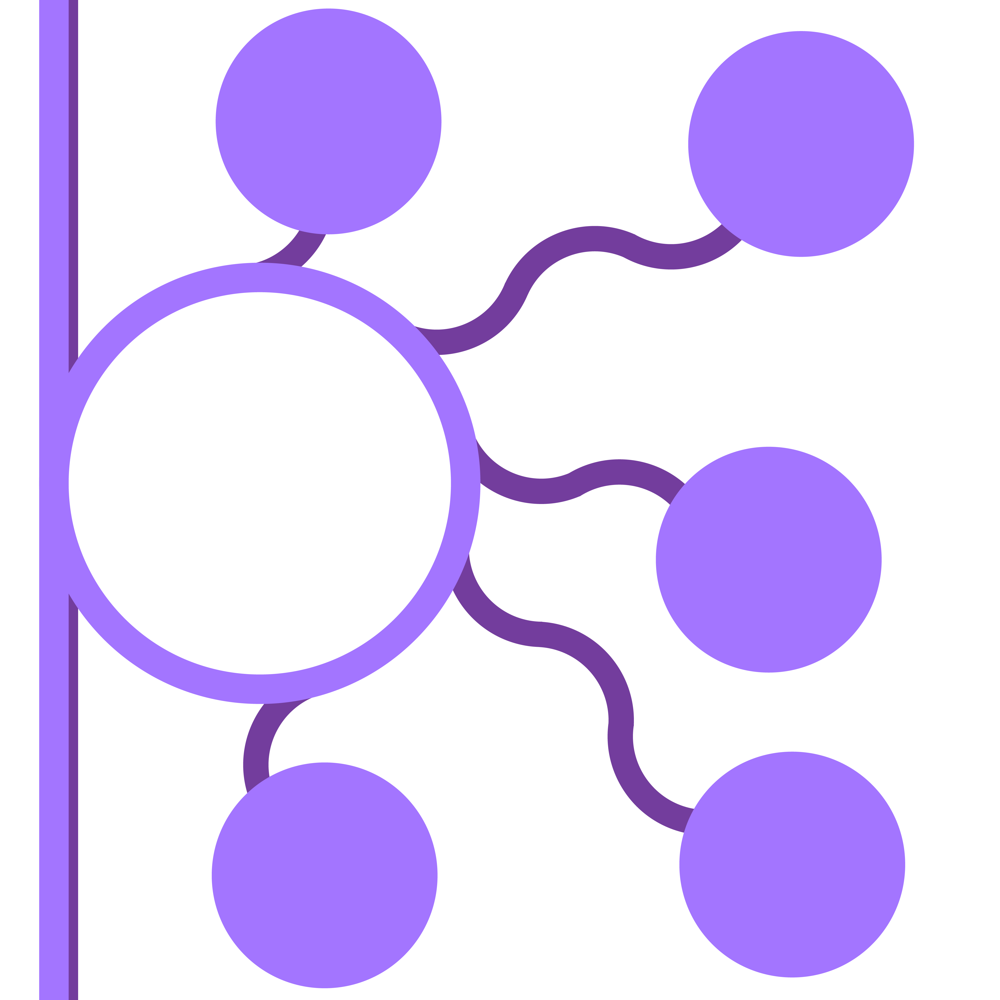

Future Applications
We showed that our sequence-specific gene elimination system worked in lab strains of E. Coli. From here, this mechanism can be modified to address a wide range of human health issues, including Shiga toxin-producing E. Coli, antibiotic resistance, and more.
